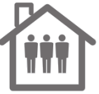
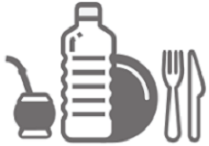

Precauciones

Lavate las manos con jabón frecuentemente
Estornudá y tosé en el pliegue del codo

No te lleves las manos a los ojos, nariz ni boca
Ventilá bien los ambientes de tu casa y de tu trabajo

Limpiá los objetos que usás con frecuencia

Permanecé en tu dimicilio durante el aislamiento

Reducí el contacto físico con otras personas

No compartas mate, vajillas ni otros objetos de uso personal

No circules si no es necesario. Si lo hacés usa tapabocas y mantene distancia
Síntomas
Fiebre y dolor de garganta